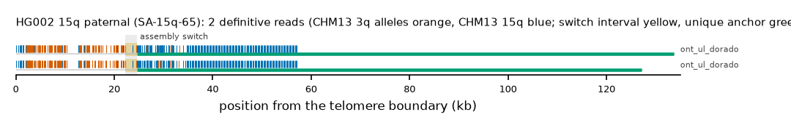

HG002 15q paternal: SA-15q-65
Claim HG002#1#chr15_PATERNAL#R. All claims
- cohort
- HG002 Q100
- individual
- HG002
- haplotype
- paternal
- arm
- 15q
- allele
- SA-15q-65 (foreign)
- model
- donor CHM13 3q, proximal CHM13 15q, recipient CHM13 15q, pattern DP
- claimed end(s)
HG002#1#chr15_PATERNAL#R- assembly switch
- 24,486 bp from the telomere boundary; on CHM13 chr15:99727589; own-window projection 22239-24636 bp
- v1 verdict
- confirmed (confirmed)
- definitive tier
- definitive
- reads
- 2 conclusive switch-concordant, 0 discordant, 0 contradicting, 23 consistent; 2 definitive (ont_ul_dorado)
- by tier
- definitive:2;consistent:23
- source
- HG002 Q100 v1.1 public read alignments (16 files; 12 independent datasets after molecule de-duplication)

Conclusive and contradicting reads (2)
34 further reads are consistent (switch test passed, but no terminal telomere, anchor or integrity); they are
listed in reads.tsv.gz. Switch: 95% interval in subtelomere coordinates (kb from the
telomere boundary) and projected on CHM13 15q. Each samtools command prints the read's record
from its public file (CRAM: add the CHM13 v2.0 FASTA as -T).
| read | dataset | tier | length | switch (subtelomere, kb) | switch on CHM13 | donor units / purity | proximal units / purity | anchor (CHM13, MAPQ, unique) | own-assembly best end | fetch |
|---|---|---|---|---|---|---|---|---|---|---|
5448c6a9-91c6-47e9-8d03-9fb645a87a39 | ont_ul_dorado | definitive | 136,119 | 22.2-24.6 | chr15:99727440-99729824 | 131 / 0.80 | 176 / 0.96 | chr15:99617277-99727440, 60, 101.2 kb | HG002#1#chr15_PATERNAL#R (98.8%) ✓ | samtoolssamtools view -F 0x900 -X 'https://human-pangenomics.s3.amazonaws.com/T2T/HG002/assemblies/polishing/HG002/v1.1/mapping/ont_r10_ul_dorado/hg002v1.1_ont_r10_ul_dorado.pri.bam' 'https://human-pangenomics.s3.amazonaws.com/T2T/HG002/assemblies/polishing/HG002/v1.1/mapping/ont_r10_ul_dorado/hg002v1.1_ont_r10_ul_dorado.pri.bam.bai' 'chr15_PATERNAL:96199934-96256967' | awk -v r='5448c6a9-91c6-47e9-8d03-9fb645a87a39' '$1==r' |
9c2cd4f5-4009-4fce-b85a-26a1c8f59d61 | ont_ul_dorado | definitive | 128,650 | 22.2-24.6 | chr15:99727440-99729822 | 128 / 0.80 | 172 / 0.97 | chr15:99623558-99727440, 60, 94.9 kb | HG002#1#chr15_PATERNAL#R (97.9%) ✓ | samtoolssamtools view -F 0x900 -X 'https://human-pangenomics.s3.amazonaws.com/T2T/HG002/assemblies/polishing/HG002/v1.1/mapping/ont_r10_ul_dorado/hg002v1.1_ont_r10_ul_dorado.pri.bam' 'https://human-pangenomics.s3.amazonaws.com/T2T/HG002/assemblies/polishing/HG002/v1.1/mapping/ont_r10_ul_dorado/hg002v1.1_ont_r10_ul_dorado.pri.bam.bai' 'chr15_PATERNAL:96199934-96256967' | awk -v r='9c2cd4f5-4009-4fce-b85a-26a1c8f59d61' '$1==r' |
Files
CRAM/BAM on CHM13 v2.0, BAM on the person's own assembly windows and the window FASTA: release asset subtel_read_evidence_v1_HG002_Q100.tar.gz, directory read_evidence_v1/HG002_Q100/HG002_1_chr15_PATERNAL_R/ (downloads).
Re-derive this verdict
git clone https://github.com/jlanej/human-subtelomere-atlas && cd human-subtelomere-atlas
evidence/replicate_claim.sh 'HG002#1#chr15_PATERNAL#R'The script fetches the cited reads from the public source by region and read ID, re-runs the frozen criteria and compares every per-read and claim verdict with this page (details).